Несколько пьес Жана-Филиппа Рамо в исполнении Григория Соколова.
Дикари (Les sauvages):
Циклопы (Les Cyclopes):
С Новым годом!
Несколько пьес Жана-Филиппа Рамо в исполнении Григория Соколова.
Дикари (Les sauvages):
Циклопы (Les Cyclopes):
С Новым годом!
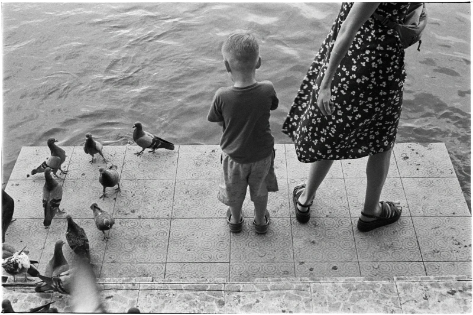
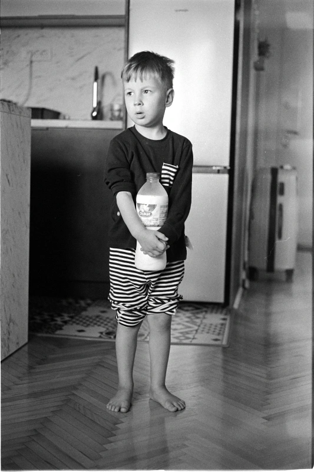
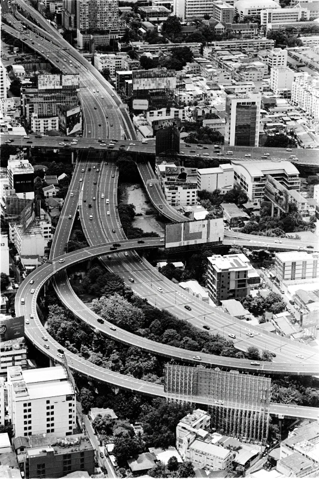
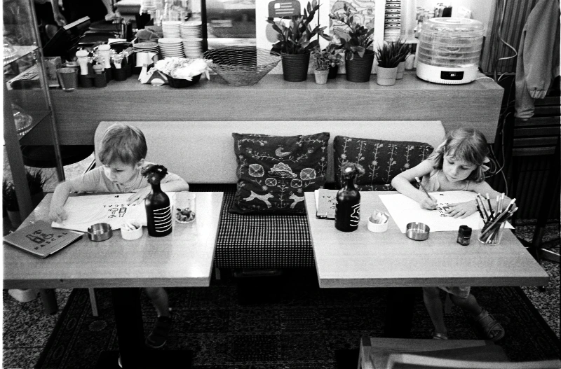
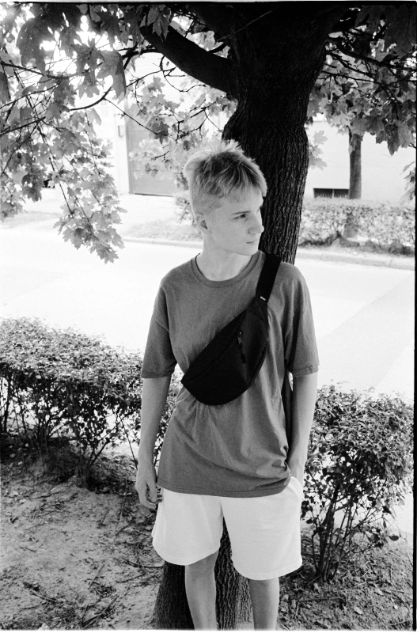
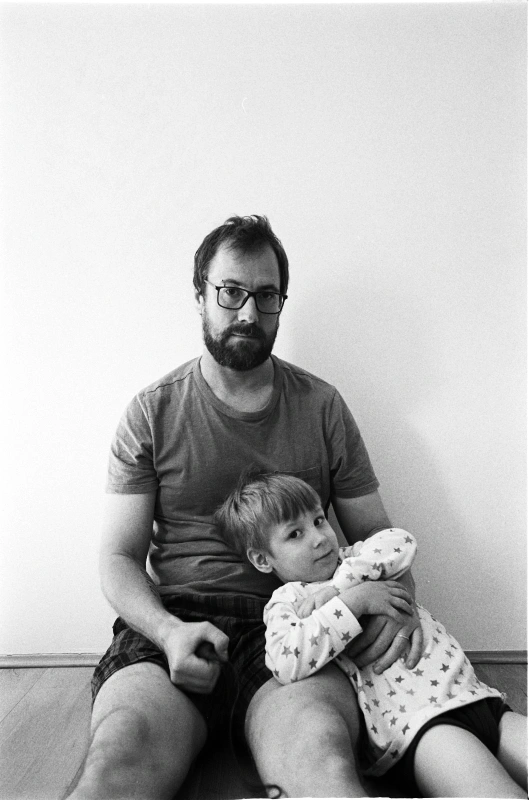
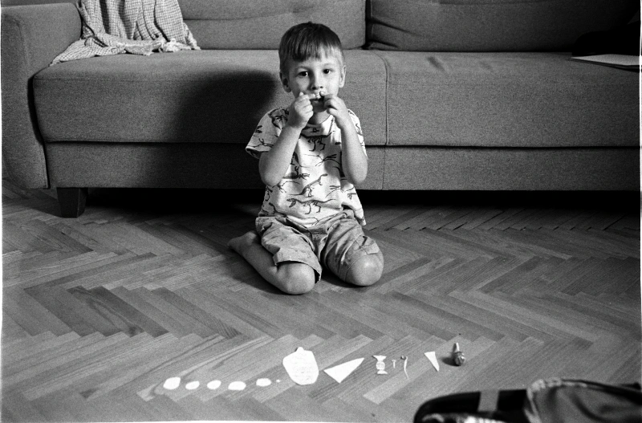
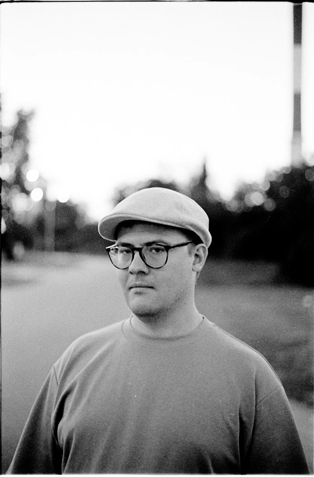
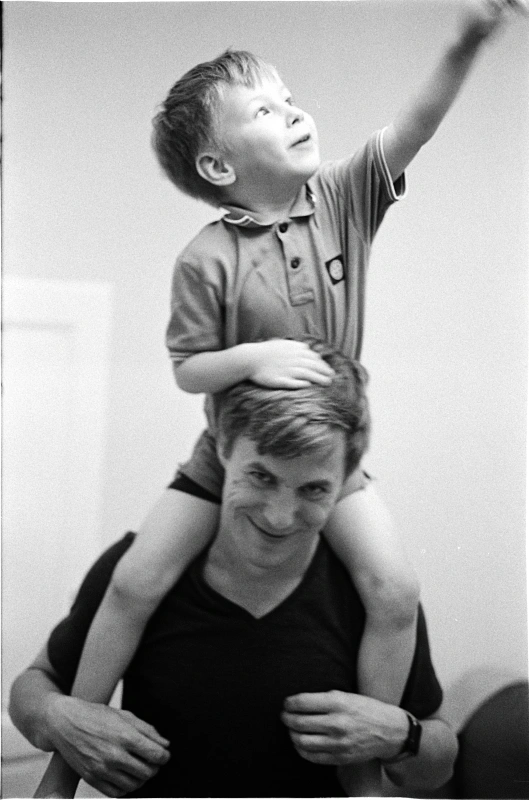
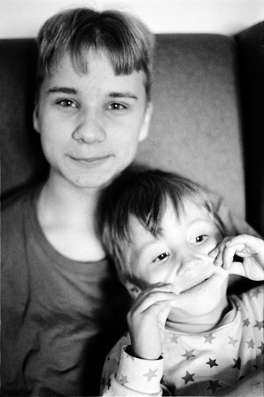
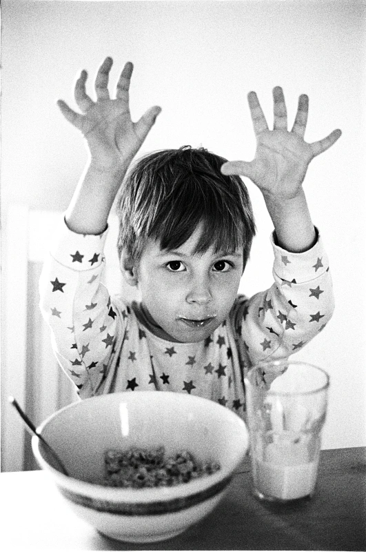
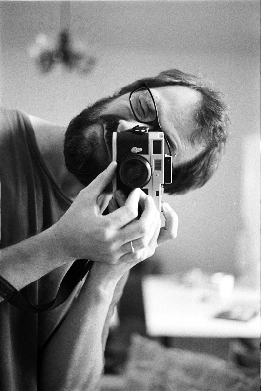
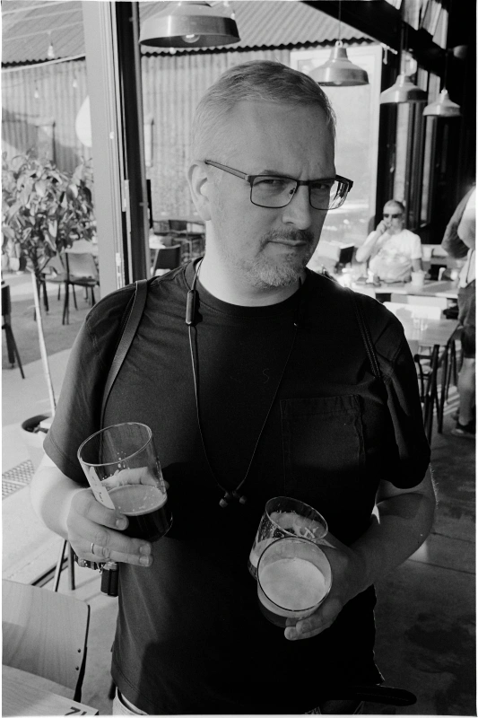
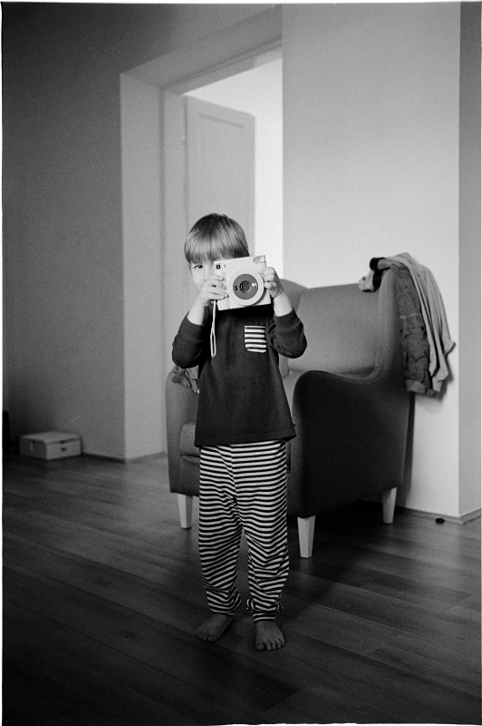
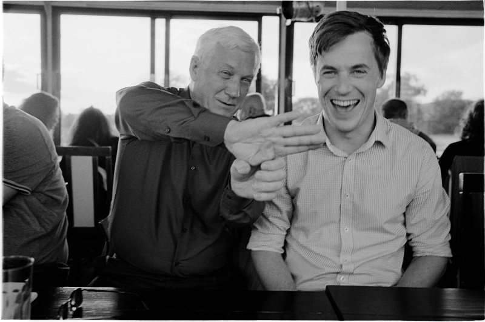
Директор Института США и Канады Валерий Гарбузов об утраченных иллюзиях уходящей эпохи
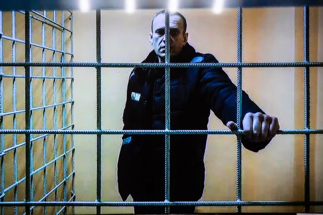
Как сказал сегодня Алексей: Цифра приговора не для меня. Она для вас.
А на этой фотографии, кроме Алексея, можно попробовать разглядеть и всю современную Россию.
ps: Леха, держись!
Про Невшехир такого списка не сделал, а надо было бы.
Итак, буду скучать по:
А из того, по чему скучать не буду, отмечу только одно:
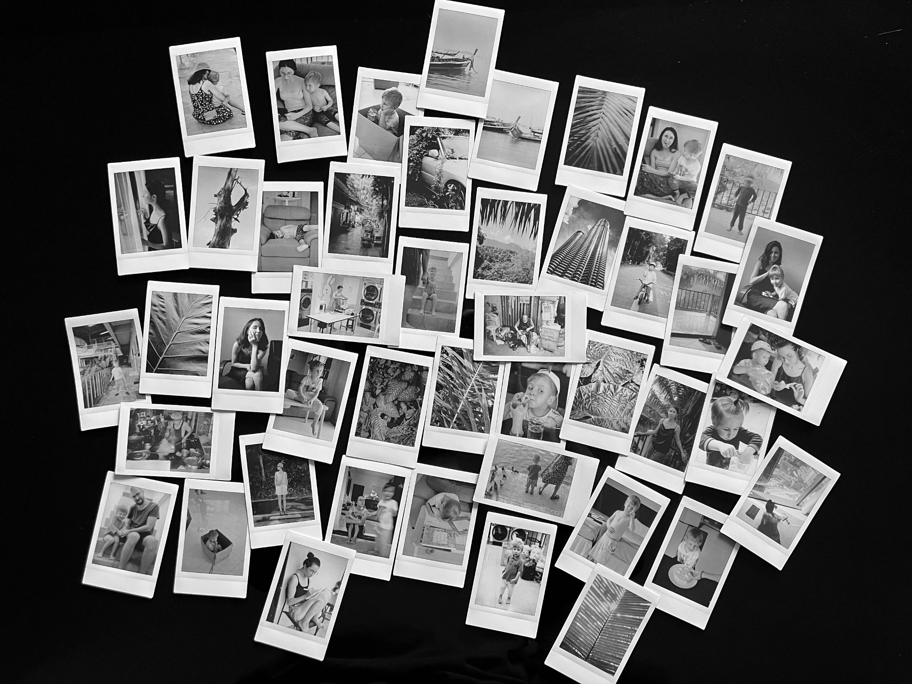
Собрал вместе фотографии из нашего азиатского путешествия. Ну или вот риил.
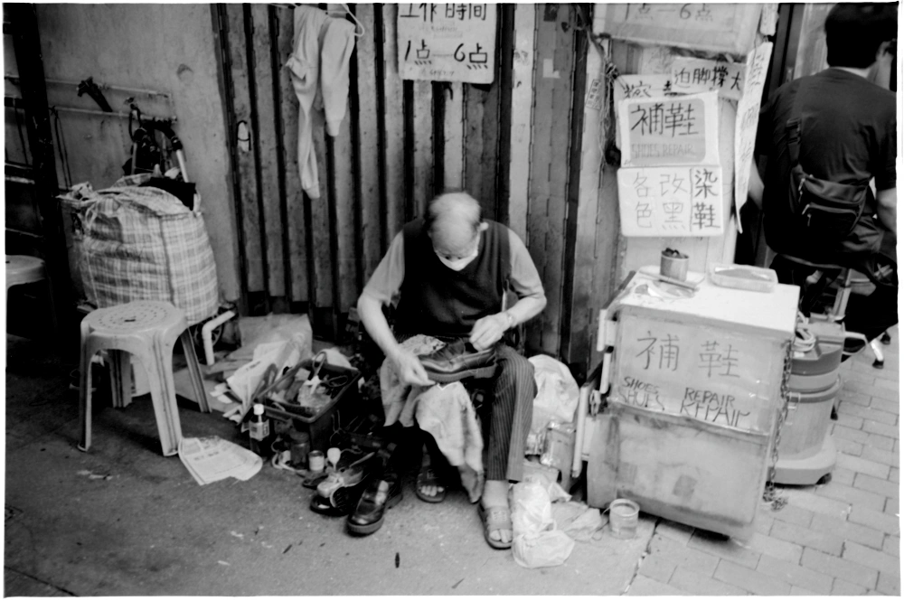
В Гонконге я офигел от небоскребов.
От баров с исключительно белыми посетителями.
От ужасно стертых собственных ног.
От филлипинок, каждое воскресенье (ровно на один день в неделю) поселяющихся в картонных коробках во множестве надземных переходов.
От узких двухэтажных трамвайчиков.
От кофе за 10 баксов.
От невообразимо желтого солнца, пару раз за неделю таки пробивавшегося через низко висящие облака.
И от этого дядечки, с невероятной скоростью зашивавшего чей-то ботинок в одном из переулков Коулуна.